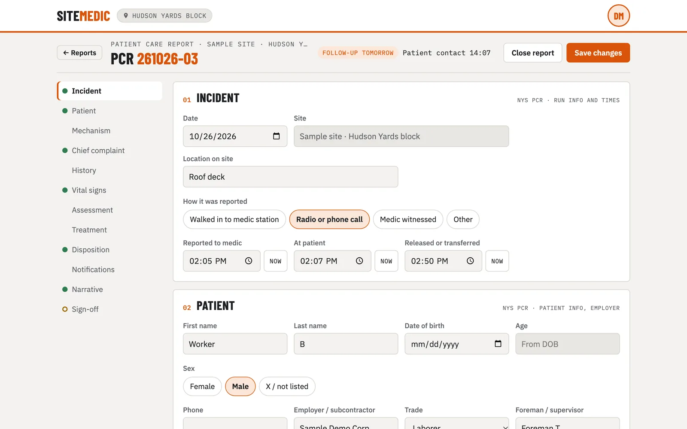
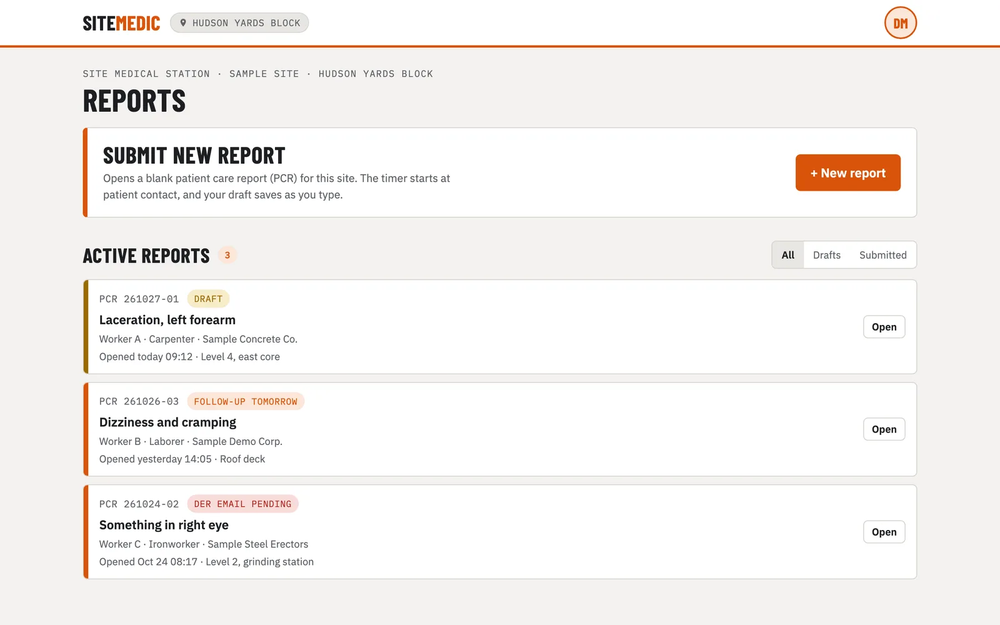

Web app · Healthcare
SiteMedic
I work as a medic at construction-site clinics in New York City. The paperwork lives on paper forms, in email threads and in people's heads. SiteMedic puts the patient care report, the OSHA details and the follow-ups in one place, laid out the way a shift actually runs.
- My role
- Design, product, build
- Built with
- Next.js, React, TypeScript, Vitest. Supabase next.
- Status
- In progress
- 13-section report modeled on the New York State PCR and OSHA Form 301
- Clickable mockup approved before a line of the real app was written
- Sample data only — no real patient information, ever